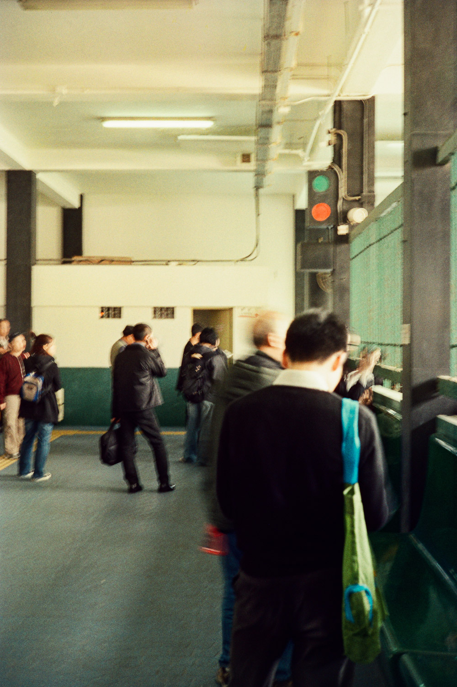

2011年3月31日是紅磡至中環及灣仔天星小輪營運的最後一天，當天同一個黃埔友一齊去影相記錄低這一天，瘋狂地一天內共坐了六次船！
小學時家住紅磡，可是對紅磡天星小輪與黃埔碼頭沒有甚麼深刻的印象。2011年時剛剛開始用菲林相機不久，本著對於記錄香港事物和影菲林的興趣，就這樣走了一整天。
當年天星小輪因為航線乘客量少虧蝕而停辦的，加上2016年觀塘綫延綫啟用，紅磡黃埔的居民似乎有其他選擇過海。
事隔9年多至2020年，紅磡至中環的渡輪航線重新開放，由富裕小輪營運，不過使用已經不是香港的象徵 — 天星小輪。
停辦航線通知

紅磡碼頭
紅磡碼頭
紅磡碼頭
舊灣仔碼頭
舊灣仔碼頭
|||
|舊灣仔碼頭|舊灣仔碼頭|
船上看黃埔花園
入夜回到紅磡碼頭
— 完 —